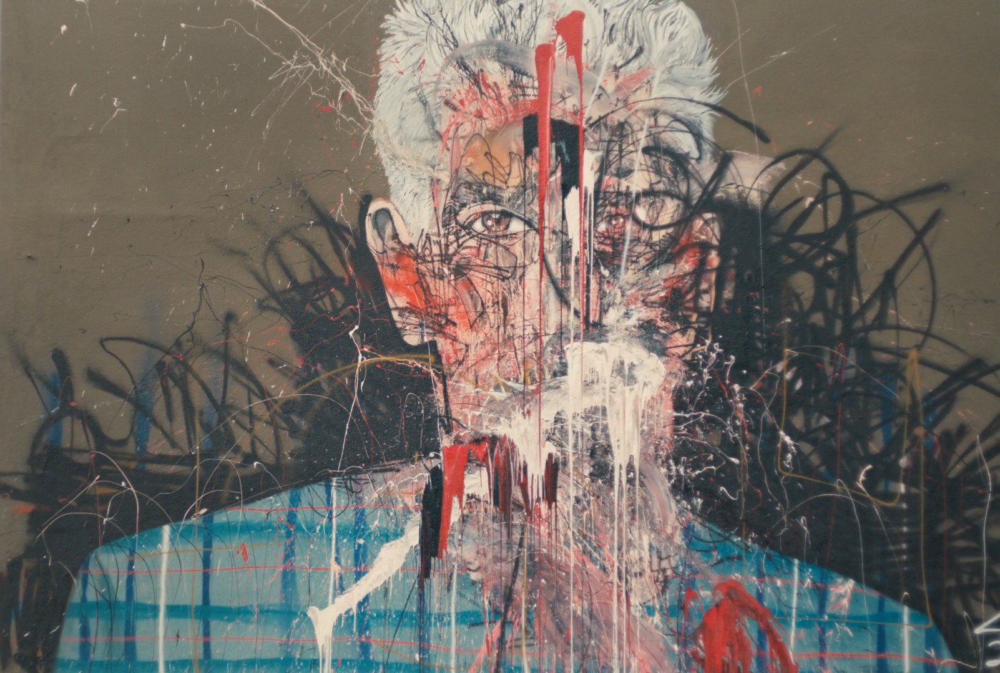
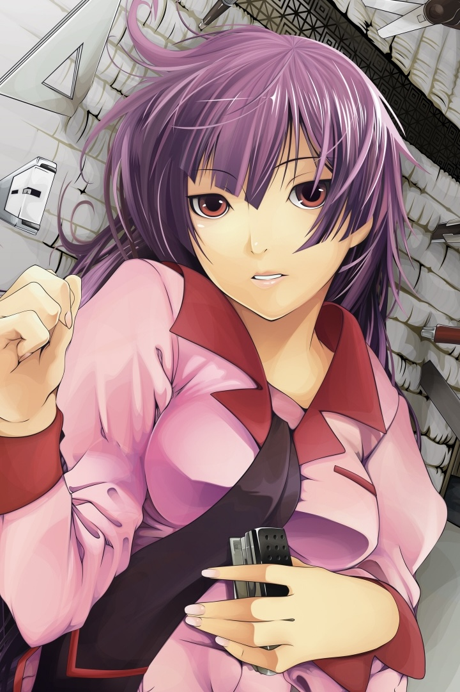
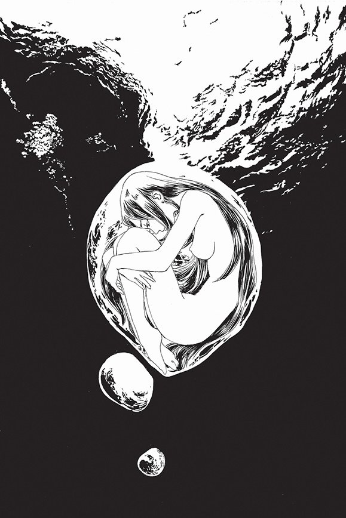

アンクル・トニー (ankuru toni) · Personal field guide to anime, film, music, manga, books, and all the art that makes sense of a life lived from the inside.
I've never trusted other people's taste to tell me what I should feel.
Not because I think I'm above it. But because the things that have actually moved me — the anime that stopped me cold, the films I've watched alone at 2am, the albums I've returned to without meaning to — none of them arrived through an algorithm. They arrived through something quieter. A pull I couldn't always name. An image that stayed with me for days. A line of dialogue I needed to rewind.
This is my attempt to map that pull. To understand not just what I love but why — what it says about how I see, what I'm looking for, what I'm still trying to work out. Every entry in this archive is a coordinate. Uncle Tony is the guide who reads the map.
I built this for myself. But if you're here, maybe something in it speaks to you too. Maybe you also know the feeling of sitting alone with something that got all the way in — and not having the words for it yet.
This is my attempt at the words.
Not a recommendation engine.
Not a critic. Not a database with a personality.
A guide who has read the full map of what you built in silence —
and can take you somewhere you didn't know you needed to go.
Uncle Tony needs an Anthropic API key.
Get one free at console.anthropic.com → API Keys.
Stays in your browser only. Never sent anywhere else.

